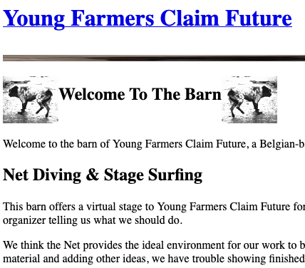
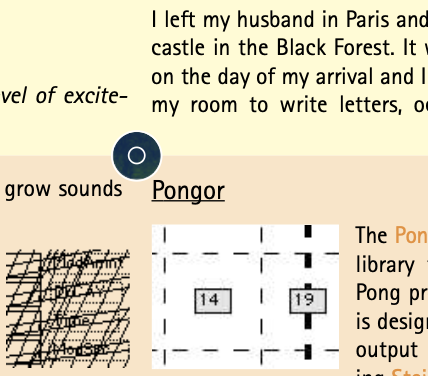
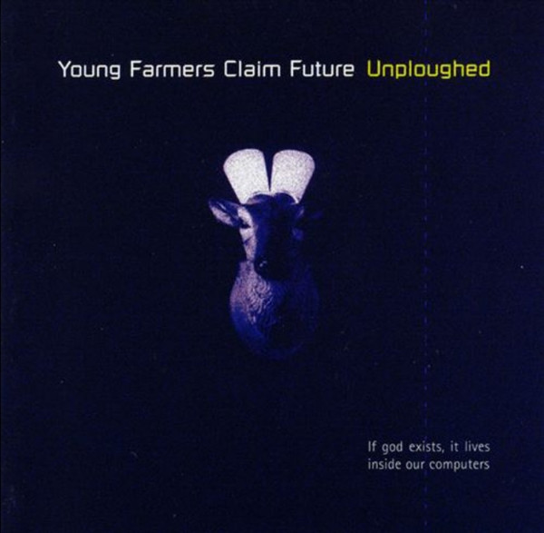
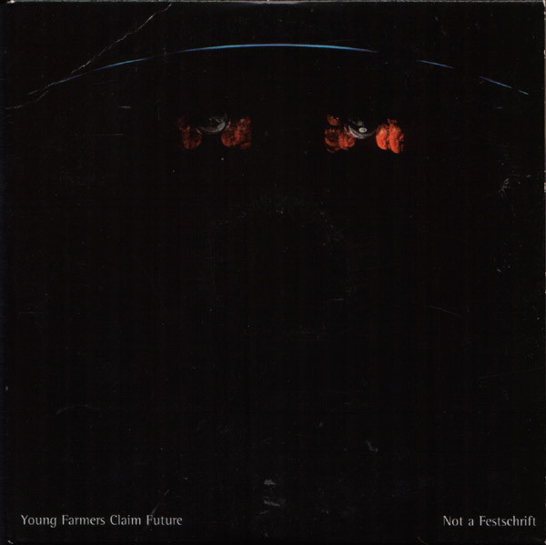
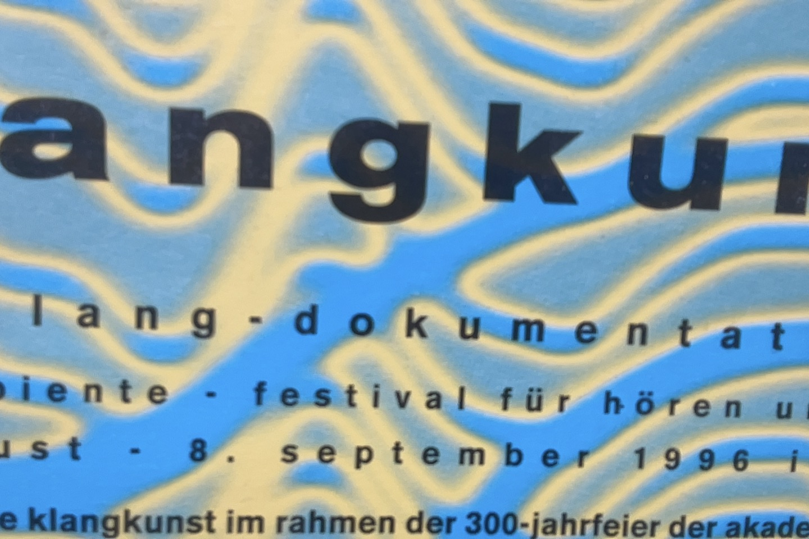
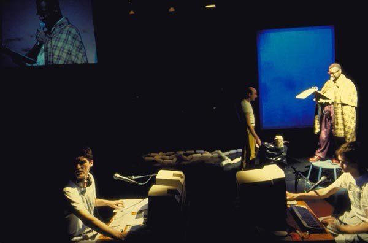
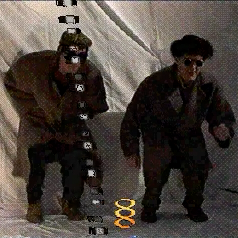

| YOUNG FARMERS CLAIM FUTURE: STRUCTURAL AND ECONOMIC CHARACTERISTICS |
|---|
|
Young Farmers Claim Future were in business for 10 years and then disappeared for 25. In which case most bands would fetch their old jeans, re-stone wash their jackets, and playback their reunion concerts with younger musicians. And managers. Young Farmers Claim Future snicker and refuse. |
| They never had a manager to start with. They actually never considered themselves proper artists or musicians. They hadn't had a proper musical or visual education, and had no previous artists nor priests in the family to be proud of. They did not improvise, they did not solo, they were just sitting together programming to make the music they liked. They played no covers, followed no style consciously, admired no glorious artists from the past to compare themselves with. They accidentally released cds; submitted a website to a skandinavian media art festival. There came invitations for performances at local events, which they took up both seriously and sarcastically. They got some support from abroad: free studio time and traveling, concerts at a few european venues, presence at a prominent sound art exhibition, and some broader interest in what they were doing off main stream. Then came the millennium bug (ach, who remembers that anyway...) |
| So, after all this time, what is left of it? Who were these Young Farmers that Claimed the Future? What were their music and visuals like? How did they perform? Current data from European Statistics or Music Data Networks don't help in answering these and related questions. So... better to look at what time has done to the original data and restore what was lost, trying to remain faithful to the original representations. |
|
klik and go ahead! no fancy redesign, and no money no fame just good music! |
| TIME OR THE CONTRADICTIONS THAT SHAPED OUR LIVES |
|
       |
|
Generational renewal and supporting Young Farmers Claim Future has never been more critical than it is today. With 0% of Young farmers Claim Future under 65, policy makers and civil society must ask themselves who will produce the music and visuals to feed families in the future? The answer is simple. By supporting Young farmers Claim Future today, we can provide the pleasures for a society tomorrow. |